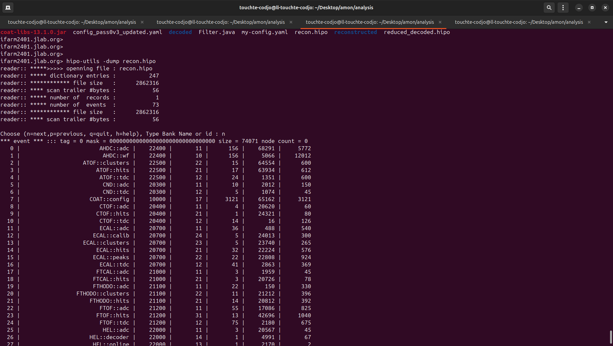
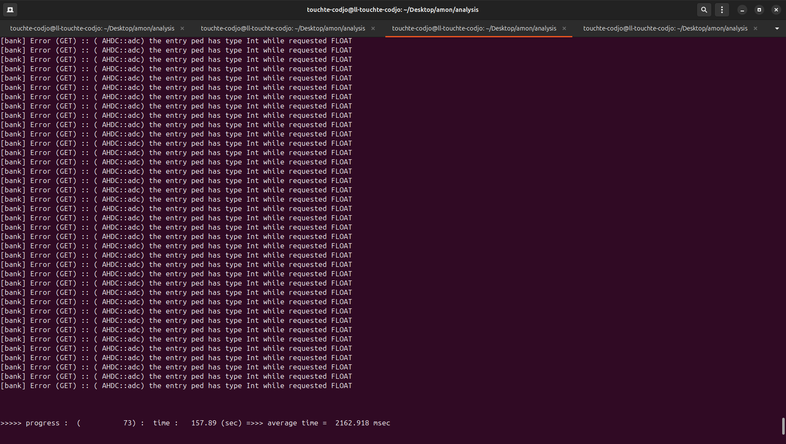

Lognumber 11.
Submitted on Sun, 27 Jul 2025 - 04:19:28 CEST
Marker:
Send to:
I'm tired. I worked on the computer since yesterday. In reusme: - I can reduce a hipo by selecting a specified list of event number (code: Filter.java) - I run the decoding with the script job_recon, max 10000 events - Used Filter.java to select only 73 events (startTime > 0 and event_number in 172900 and 173000) - Run the reconstruction using a modified version of config_pass0v3.yaml from the Mathieu's ifarm repo. I call it my-config.yaml - I have only changed the path : schema_dir: "/w/hallb-scshelf2102/clas12/users/touchte/coatjava/coatjava/etc/bankdefs/hipo4/singles/mon/" - To run the code : /w/hallb-scshelf2102/clas12/users/touchte/coatjava/coatjava/bin/recon-util -i reduced_decoded.hipo -o recon.hipo -y my-config.yaml - Current issue: type of AHDC::adc:ped (it is no longer a INT, Noemie changed it to a FLOAT). Any reconstruction code to use ped will generate error. to be fixed
Attachments (2)
1.

2.
